Featured Speakers
Hover over a speaker to learn more.

Sadeer Al-Kindi
MD
Sadeer Al-Kindi, MD
Associate Professor and Jerold B. Katz Endowed Investigator at Houston Methodist's DeBakey Heart and Vascular Center. Fellowship-trained preventive and imaging cardiologist with over 200 peer-reviewed publications. His research on cardiometabolic disease and cardiovascular risk in diverse populations is central to understanding heart disease disparities in Arab American communities.
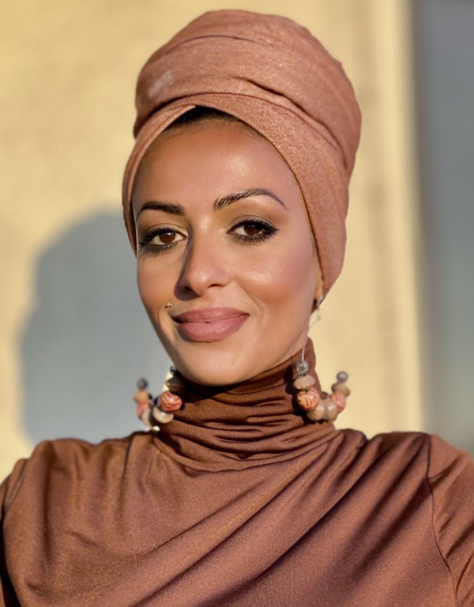
Marwa Ghazali
PhD
Marwa Ghazali, PhD
Assistant Professor of Anthropology at Central Washington University specializing in medical anthropology, structural violence, and displacement in MENA communities. Her multi-sited ethnographic research examines health inequalities and the politics of mortality among marginalized Arab and diasporic populations in the U.S. and abroad.
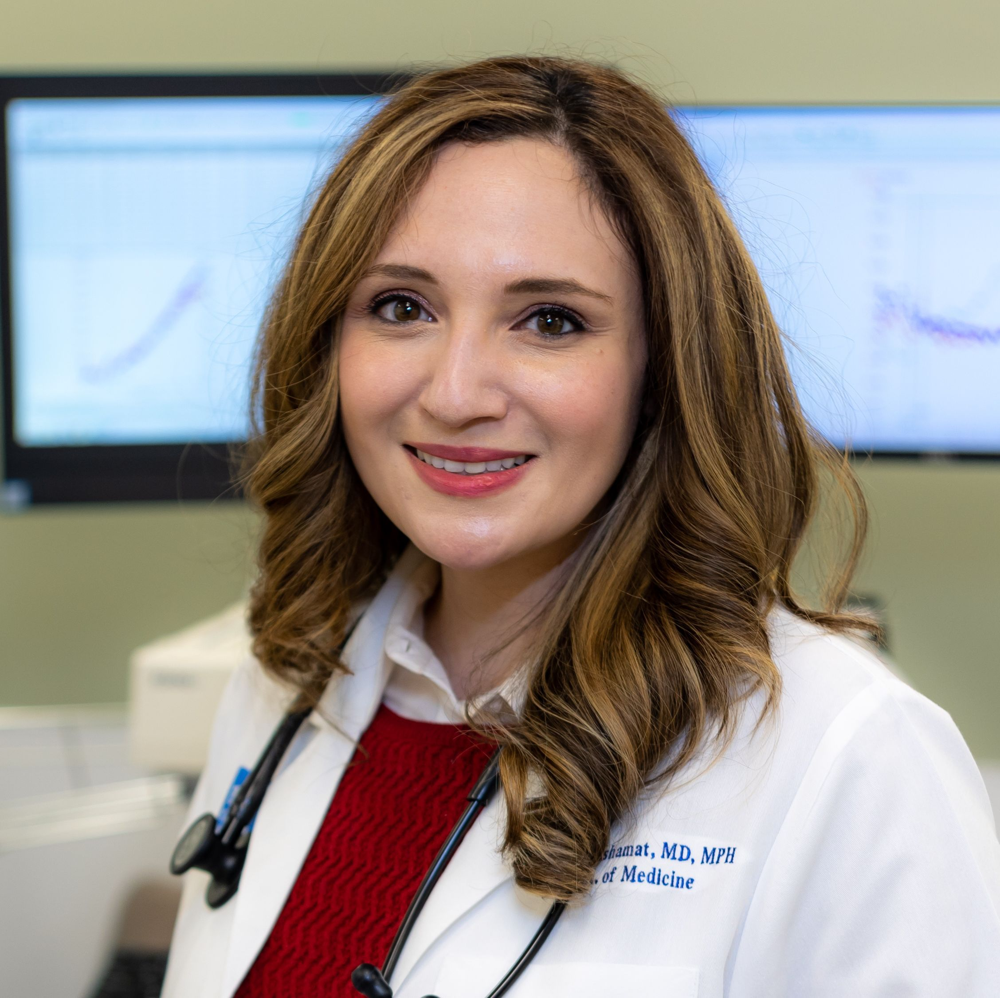
Layla Abushamat
MD
Layla Abushamat, MD
Endocrinologist and NIH K23 award recipient at Baylor College of Medicine specializing in the prevention and management of cardiometabolic disease including diabetes, obesity, and dyslipidemia. Her research on cardiometabolic risk in multi-ethnic populations informs our understanding of metabolic health disparities relevant to Arab Americans.
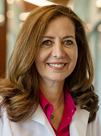
Rouba Ali Fehmi
MD
Rouba Ali Fehmi, MD
Professor of Pathology and Director of Breast Pathology at the University of Michigan with over 140 publications on cancer progression. Immediate past president of NAAMA and founder of NAAMA NextGen. Her landmark research on Arab American health — including obesity, HPV, and COVID-19 vaccine attitudes — was presented at the White House.
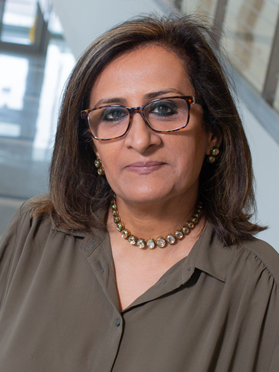
Samina Salim
PhD
Samina Salim, PhD
Associate Professor at the University of Houston College of Pharmacy and 2025–2026 Fulbright U.S. Scholar. Her research bridges behavioral neuroscience and community health, with published studies on post-resettlement health among refugees and mental health outcomes in Arab and Arab American communities.
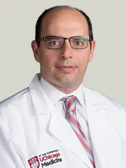
Karam Radwan
MD
Karam Radwan, MD
Associate Professor and Section Chief of Child and Adolescent Psychiatry at the University of Chicago Medicine. A graduate of the University of Damascus, his research focuses on global mental health, refugee care, and the neurobiology of emotion in children — making him a leading voice on Arab American youth psychological wellbeing.
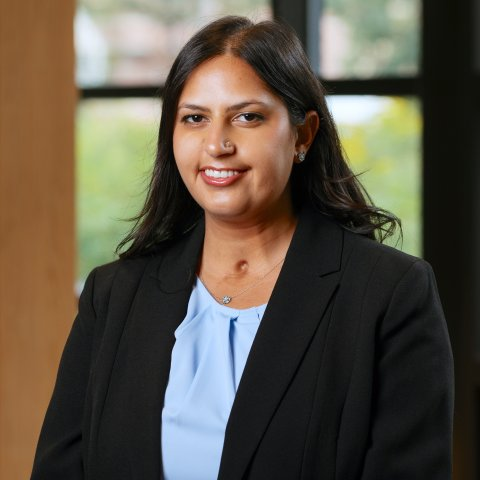
Angubeen Khan
PhD
Angubeen Khan, PhD
Postdoctoral Research Fellow at the University of Michigan's Population Studies Center. Her intersectional research examines how social norms, religion, and migration context shape the reproductive and sexual health of MENA women. She has published foundational work on intimate partner violence and reproductive coercion among Arab American women in Southeast Michigan.
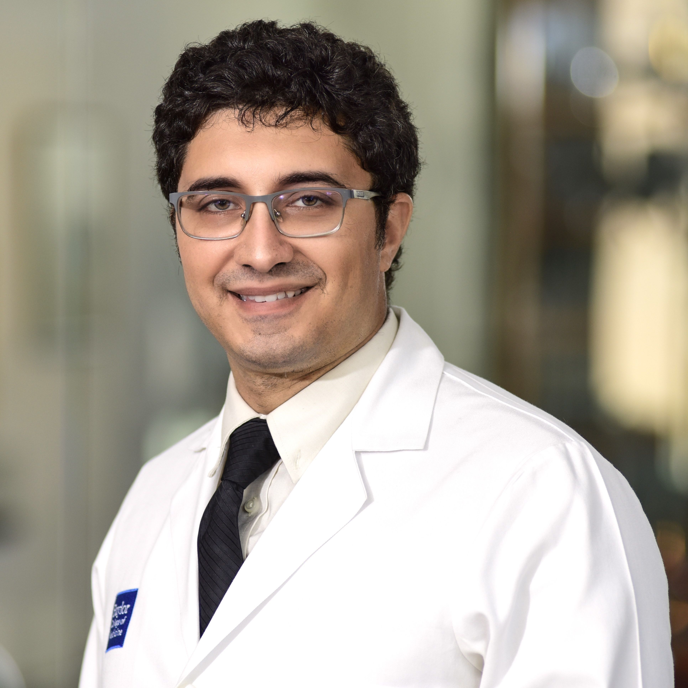
Ahmed Elkhanany
MD
Ahmed Elkhanany, MD
Assistant Professor at the Lester and Sue Smith Breast Center at Baylor College of Medicine specializing in breast oncology and high-risk prevention. Trained at Mayo Clinic, his research on race, ethnicity, and cancer genomics directly informs understanding of cancer disparities in Arab American and other minority populations.
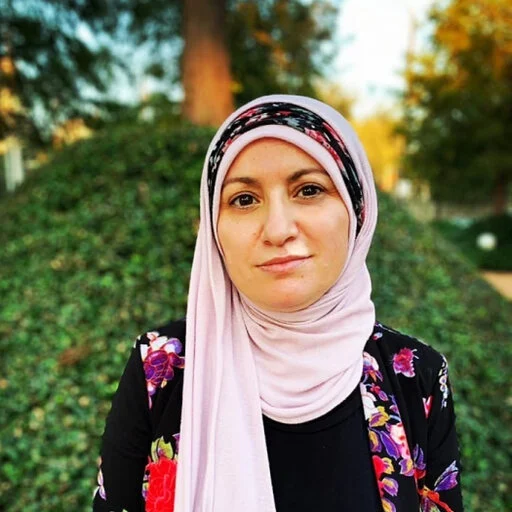
Fatin Atrooz
PhD
Fatin Atrooz, PhD
Pharmacology researcher and Fulbright Scholar from Jordan specializing in behavioral neuroscience and stress biology with over 40 publications. She has conducted published research on anxiety and depression prevalence among Houston-based MENA residents and on mental health among Syrian refugees — bringing essential data to Arab American mental health discourse.
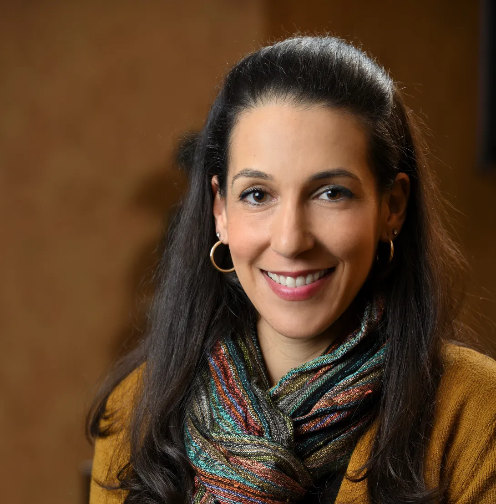
Nadia Abuelezam
ScD
Nadia Abuelezam, ScD
Assistant Professor at Boston College and one of the nation's foremost researchers dedicated to Arab American health disparities. Holding a ScD from Harvard T.H. Chan School of Public Health, her advocacy for disaggregated MENA health data and publications in leading journals have been instrumental in advancing Arab American health equity nationally.
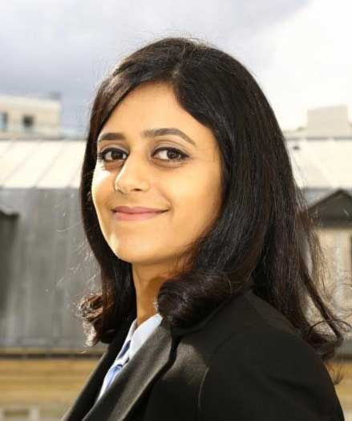
Solaf Alawadhi
MD, MPH
Solaf Alawadhi, MD, MPH
Physician-scientist and Research Scientist in the Department of Surgery at Houston Methodist Hospital with graduate training in Comparative Effectiveness Research from NYU. Her 37 publications focus on kidney disease, transplant access, and risk prediction models to improve outcomes in underserved populations, including Arab Americans.
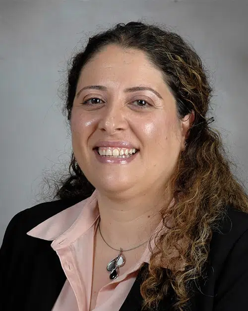
Rana Afifi
MD
Rana Afifi, MD
Associate Professor of Vascular Surgery at McGovern Medical School, UTHealth Houston, specializing in acute aortic dissection and cardiovascular outcomes in women. Founder of the Women's Vascular and Cardiac Health Initiative (WVACHI), her population-level research on sex-based cardiovascular disparities addresses the health needs of Arab American women.
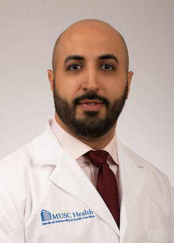
Mohanned "Mike" Mallah
MD
Mohanned "Mike" Mallah, MD
Double-board certified trauma surgeon and Director of the Global Surgery Program at MUSC. A UNC graduate and former McKinsey healthcare consultant, he has operated in over 55 countries across five continents. His expertise in global surgery and cross-cultural medical care brings an essential international perspective to Arab American health access.
Please note: This agenda is preliminary and subject to change.
Speaker assignments and session details may be updated as the program is finalized.
Check back for the latest version.
Day 1 — Friday, September 4, 2026
Evening
Welcome Reception — Details to be announced
Day 2 — Saturday, September 5, 2026
8:00 – 9:00
Breakfast & Registration
9:00 – 9:05
Introduction & Welcome
Sadeer Al-Kindi
9:05 – 9:35
Keynote Address
"Living at the Margins: Displacement, Structural Violence, and Health in Arab and Diasporic Communities"
Marwa Ghazali, PhD — 25 min + 5 min Q&A
Session 1
Cardio-Kidney-Metabolic (CKM) Health
Moderator: TBD
Examining cardiovascular, kidney, and metabolic disease burden, risk factors, and disparities in Arab American communities.
9:40 – 10:00
Cardio-Kidney-Metabolic Disease in Arab Americans: Epidemiology, Gaps, and Opportunities
Sadeer Al-Kindi, MD
10:00 – 10:20
Diabetes Risk, Control, and Disparities in Arab American Communities
Samar A. Nasser, PhD
10:20 – 10:40
Obesity, Metabolic Health, and Cultural Context in Arab American Populations
Layla Abushamat, MD
10:40 – 11:15
Panel Discussion and Q&A
11:15 – 11:30
NAAMA NextGen Presentation
Rouba Ali Fehmi, MD
11:30 – 12:40
Lunch & Poster Session
Session 2
Mental Health and Social Determinants
Moderator: Nora (TBD)
Exploring stress, trauma, substance use, and psychological wellbeing among Arab and MENA American populations.
12:40 – 1:00
Stress, Trauma, and Mental Health in Arab and MENA Communities
Samina Salim, PhD
1:00 – 1:20
Honor, Family, and Substance Use Risk Among Arab and MENA American Youth
Speaker: TBD
1:20 – 1:40
Measuring What Matters: Stigma, Well-Being, Identity, and Mental Health
Karam Radwan, MD
1:40 – 2:10
Panel Discussion and Q&A
Session 3
Women's Health and Cancer
Moderator: TBD
Addressing reproductive health, family violence, cancer genetics, and screening disparities in Arab American women.
2:10 – 2:30
Reproductive Autonomy, Family Violence, and Structural Barriers to Health
Angubeen Khan, PhD
2:30 – 2:50
Cancer Genetics in Arab American Populations
Ahmed Elkhanany, MD
2:50 – 3:10
Cancer Prevention and Screening Disparities
Speaker: TBD
3:10 – 3:30
Panel Discussion and Q&A
3:30 – 4:30
Community and Professional Organization Perspectives
Day 3 — Sunday, September 6, 2026
8:00 – 9:00
Breakfast
Session 4
Behavior, Diet, and Structural Determinants
Investigating physical activity, nutrition, tobacco use, and community-driven approaches to MENA health equity.
9:00 – 9:20
Moving Matters: Physical Activity and Health in Arab Communities
Speaker: TBD
9:20 – 9:40
Food, Culture, and Health: Rethinking Nutrition in Arab Communities
Speaker: TBD
9:40 – 10:00
Tobacco, Waterpipe Use, and Emerging Risks in Arab Immigrant Communities
Fatin Atrooz, PhD
10:00 – 10:20
Community-Driven Epidemiology & Engagement to Advance MENA Health Equity
Nadia Abuelezam, ScD
10:20 – 10:35
Panel Discussion and Q&A
Roundtable
Health Research Needs for Arab Americans
10:35 – 12:00
A collaborative dialogue on research priorities, data infrastructure, policy translation, and community trust for Arab American health equity.
10:35 – 12:00
Lessons Learned from Ethnic-Based Research
Panelists: TBD
- Priority research gaps
- Data infrastructure
- Policy translation
- Community trust and engagement
12:00 – 1:30
Lunch & Poster Awards
Session 5
Surgery and Procedural Care
Examining equity and access in transplantation, surgical care, and global surgery for Arab and MENA communities.
1:30 – 1:50
Transplantation, Equity, and Access in Arab and MENA Populations
Solaf Alawadhi, MD, MPH
1:50 – 2:10
Beyond the Numbers: Advancing Equity in Surgical Care of MENA Communities
Rana Afifi, MD
2:10 – 2:30
Global Surgery in 2026: Challenges and Opportunities
Mohanned "Mike" M. Mallah, MD
2:30 – 2:50
Uniting for Surgical Equity: NAAS and NAAMA as Collaborative Partners
Speaker: TBD
2:50 – 3:05
Panel Discussion and Q&A
3:05 – 3:15
Closing Remarks and Conference Wrap-Up